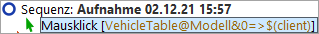

| Version 6.0.3 |
Unterelemente von Tabellen, Bäumen und Listen werden über Indizes angesprochen. Die wichtigsten beiden Indextypen sind der numerische und der Textindex. Zur Demonstration nehmen wir als nächstes einen Mausklick auf eine Tabellenzelle auf und sehen uns die aufgenommene QF-Test ID der Komponente näher an.
Den aufgenommenen Mausklick finden Sie im Bereich 'Extrasequenzen'.
|
|  | ||
|
| Abbildung 13.1: Adressierung einer Tabellenzelle | ||
Die aufgenommene QF-Test ID der Komponente ist VehicleTable@Modell&0.
Sie setzt sich aus den folgenden Teilen zusammen:
VehicleTable ist die QF-Test ID der Komponente der Tabelle selbst.
@ und & trennen die einzelnen Teile voneinander. Gleichzeitig
definieren sie den Typ des darauf folgenden Index: auf @
folgt ein Textindex, auf & ein numerischer Index.
Modell ist der Textindex für die Spalte mit der Überschrift 'Modell'.
0 ist der numerische Index für die erste Tabellenzeile.
Hinweis Numerische Indizes beginnen immer mit 0.
Sie können beide Indextypen für Zeilen und Spalten verwenden. Dabei ist nur wichtig, dass das Trennzeichen und der Typ des folgenden Index zusammenpassen.
Die Lösung hierfür lautet VehicleTable&1&2.
Um das Modell 'I5' über Textindizes anzusprechen, tragen Sie
VehicleTable@Modell@I5 ein. Das gleiche Feld kann man numerisch
mittels VehicleTable&0&4 ansprechen oder mit gemischten Indizes
mittels VehicleTable&0@I5 oder VehicleTable@Modell&4.
Der dritte Indextyp von QF-Test ist ein Index mit regulärem Ausdruck.
Reguläre Ausdrücke werden verwendet, um Zeichenketten durch einen Ausdruck
zu ersetzen, der verschiedene Zeichenketten adressieren kann. Sozusagen
eine "Sternchensuche", wobei reguläre Ausdrücke wesentlich mächtiger sind
und eine eigene Syntax besitzen. Eine genauere Beschreibung regulärer Ausdrücke
finden Sie im Handbuch.
Beispiel: Das Modell 'I5' könnte man also auch über VehicleTable@Modell%I.*
ansprechen.
Listen werden analog zu Tabellen adressiert, nur dass sie nur einen einzigen Index benötigen.
Bäume haben ebenfalls nur einen einzigen Index. Dieser ist der Pfad durch den Baum zu dem adressierten Baumknoten. Der Pfad setzt sich aus den einzelnen Knoten zusammen, die durch Schrägstriche ("/") voneinander getrennt werden.
Für den Baumknoten "Beschreibung" wird die folgende QF-Test ID der Komponente aufgenommen:
DetailsTree@/Information/Beschreibung. Die einzelnen Bestandteile davon sind:
DetailsTree ist die QF-Test ID der Komponente des Baums selbst.
@ trennt die QF-Test ID der Komponente des Baums vom Index. Die Syntax ist hierbei analog
zu der der Tabellenindizes, d.h. @ steht für einen Textindex, &
für einen numerischen Index und % für einen Index mit regulärem Ausdruck.
/Information/Beschreibung ist der Textindex für den Baumpfad zum Knoten
'Beschreibung'.
Wenn Sie den Knoten über einen numerischen Index adressieren wollen,
verwenden Sie DetailsTree&/0/1.
| Letzte Änderung: 6.9.2022 Copyright © 2002-2022 Quality First Software GmbH |